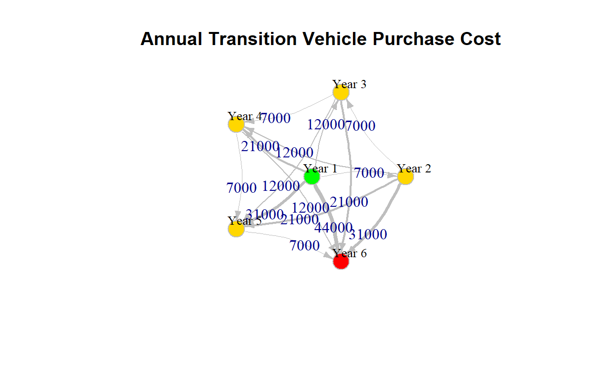
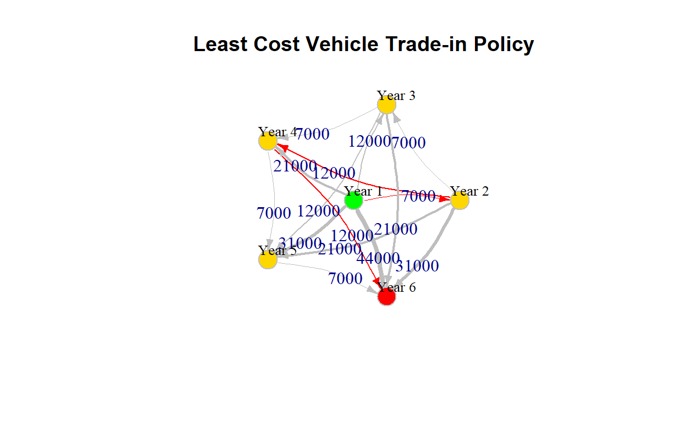

In this post we will walk through how to make least cost decisions using network flows shortest path algorithm.
A common problem we often face in the world is to find the shortest path between two points. Whether it is on the road, or how to obtain an object in in our intellectual trajectory, we are always seeking to optimize.
In network flows one common problem is to find the
s-t shortest path. The problem formulation is as
follows.
Given some net of nodes, and two particular nodes s and
t that are not the same, find the shortest distance through
the edges connecting them. The mathematical formulation is below. \[ N \in \{n_1, n_2, .., n_D\} \] \[ E = \{N \times N\} = \{e_{ij} \in \Re^+ |
\:\:\forall i,j \in N \} \] \[ s,t \in
N : s\neq t\]
We all have to drive cars at some point in our adult lives (well, most of us). With this comes the question of investment decisions if I am allowed to call it that. Which car should we buy? How long should we keep it? Is it more prudent to keep paying maintenance, repairs, and damages, or just get a new ride?
We would like to know what is the best decision to make over the next
5 years for our vehicle needs. So we take this problem and model it as
an optimization problem using the famous
shortest paths algorithm.
So with our problem the decision space is pretty straight forward:
Each year we can choose to keep our vehicle, or
Trade it in
However, every year we choose to keep our vehicle, we must pay maintenance costs for it. So every year we keep it, there is a cumulative maintenance cost. Once we trade-in we offset the cost of the new car with the trade in value, and pay much less maintenance on the new ride. Let’s take a look at the problem data.
We know the cost every year of a new vehicle is assumed as
$12,000 for simplicity. Further, we have some records of
what maintenance costs and trade-in values will be.
The new car cost is assumed constant every year. An interesting
homework assignment would be to make this stochastic and
change over time. This is much more suitable to the real world, but for
this example will remain constant.
NEW_CAR_COST <- 12000
NEW_CAR_COST[1] 12000The maintenance costs are for 4 years. Each year you keep the car, you will pay more on maintenance.
M <- data.frame(Year = c(0:4), Maintenance_cost = c(2000, 4000, 5000, 9000, 12000))
M_vec <- M %>% dplyr::pull(Maintenance_cost)
M Year Maintenance_cost
1 0 2000
2 1 4000
3 2 5000
4 3 9000
5 4 12000The trade-in price is similar to maintenance. Each year you keep the vehicle, it will depreciate. So to account for this we have a decreasing trade-in value.
T <- data.frame(Year = c(1:5), Trade_in_price = c(7000, 6000, 2000, 1000, 0))
T_vec <- T %>% dplyr::pull(Trade_in_price)
T Year Trade_in_price
1 1 7000
2 2 6000
3 3 2000
4 4 1000
5 5 0Since we know the costs will be cumulative, so we know what each years will be. The cost matrix will be for the number of years the car is kept to accumulate costs from maintenance. In mathematical language, this is represented below:
\[ c_{ij} = \sum_{t=1}^{j-1}{M_{t-1}}\:\: if\: j > i \:\: otherwise \: \infty \]
Where M is the maintenance matrix defined above.
We also know our objective is to minimize the total cost, which
equates to maintanence cost +
cost to purchase a new car -
trade in value.
# Nodes dataframe
nodes = data.frame(Year = c(sprintf("Year %s", seq(1:6))),
Color = c("green", "gold", "gold", "gold", "gold", "red"))
n = nrow(nodes)
# Edges list
edges = list(from=c(), to=c(), cost=c(), color=c())
# Cost matrix
C <- matrix(0, n, n)
BIG_M <- 1000000
for(i in 1:n){
for (j in 1:n){
if(j > i){
# Cost of maintenance
maintenance_cost <- M_vec[1:(j-i)]
maintenance_cost_total <- sum(maintenance_cost)
# Cost of new car
new_car_cost = NEW_CAR_COST
# Trade-in value
trade_in_revenue <- T_vec[j-i]
# Total cost for decision to buy car on year i and sell it on year j
total_cost_for_decision_i_to_j <- new_car_cost + maintenance_cost_total - trade_in_revenue
# Save the value into cost matrix
C[i,j] <- total_cost_for_decision_i_to_j
edges$from <- append(edges$from, paste("Year", i))
edges$to <- append(edges$to, paste("Year", j))
edges$cost <- append(edges$cost, total_cost_for_decision_i_to_j)
edges$color <- append(edges$color, "grey")
}
else{
# Big M otherwise to make edge infeasible
C[i,j] <- BIG_M
}
}
}
# Edges dataframe
edges <- edges %>% as.data.frame
nodes Year Color
1 Year 1 green
2 Year 2 gold
3 Year 3 gold
4 Year 4 gold
5 Year 5 gold
6 Year 6 rededges from to cost color
1 Year 1 Year 2 7000 grey
2 Year 1 Year 3 12000 grey
3 Year 1 Year 4 21000 grey
4 Year 1 Year 5 31000 grey
5 Year 1 Year 6 44000 grey
6 Year 2 Year 3 7000 grey
7 Year 2 Year 4 12000 grey
8 Year 2 Year 5 21000 grey
9 Year 2 Year 6 31000 grey
10 Year 3 Year 4 7000 grey
11 Year 3 Year 5 12000 grey
12 Year 3 Year 6 21000 grey
13 Year 4 Year 5 7000 grey
14 Year 4 Year 6 12000 grey
15 Year 5 Year 6 7000 greyC [,1] [,2] [,3] [,4] [,5] [,6]
[1,] 1e+06 7e+03 12000 21000 31000 44000
[2,] 1e+06 1e+06 7000 12000 21000 31000
[3,] 1e+06 1e+06 1000000 7000 12000 21000
[4,] 1e+06 1e+06 1000000 1000000 7000 12000
[5,] 1e+06 1e+06 1000000 1000000 1000000 7000
[6,] 1e+06 1e+06 1000000 1000000 1000000 1000000Now that we have our cost matrix, the last ingredient is to solve the
problem. That means to solve the s-t shortest path from
Year 0 to Year 6, so we can determine what is
the cheapest investment strategy for us. For this, we will be using the
igraph package.
g <- igraph::graph_from_data_frame(d = edges,
directed = TRUE,
vertices = nodes)
# Make it a little cleaner
plot(g,
main = "Cost of Annual Vehicle Trade-in",
edge.arrow.size=.5,
vertex.color=V(g)$Color,
edge.color=E(g)$color,
edge.label = E(g)$cost,
edge.width = E(g)$cost/10000,
vertex.size=20,
vertex.frame.color="gray",
vertex.label.color="black",
vertex.label.cex=0.8,
vertex.label.dist=2, layout = layout_as_star,
edge.curved=0.2)
So once we perform the Dijkstra's Shortest Path
algorithm on the network we obtain a solution in matrix form. This
solution tells us the best possible cost for our car decision from
Year 1 to Year 6 will be at
$31,000.
What this does not show us is what path was chosen to obtain that value.
# Get the shortest paht cost matrix
s_paths_cost <- igraph::shortest.paths(graph = g, v = V(g), weights = E(g)$cost, algorithm = "dijkstra")
s_paths_cost Year 1 Year 2 Year 3 Year 4 Year 5 Year 6
Year 1 0 7000 12000 19000 24000 31000
Year 2 7000 0 7000 12000 19000 24000
Year 3 12000 7000 0 7000 12000 19000
Year 4 19000 12000 7000 0 7000 12000
Year 5 24000 19000 12000 7000 0 7000
Year 6 31000 24000 19000 12000 7000 0The optimal selection is the following sequence:
Year 1 keep the car for a year, then
sell on Year 2.Year 2, but keep for two years and
sell on Year 4.Year 4, keep for two years and
sell on Year 6.Do these numbers add up? Let’s check. 7000 + 12000 + 12000 == 31000 is TRUE.
So our least cost strategy can be no less than $31000
over the next 6 years. With the current cost structure, means to keep
the car for a year or two, then pitch it because the trade-off between
maintenance accumulation and depreciation start to mutually deter from a
least cost decision.
# Get all path distances solution vertex path
s.paths <- igraph::shortest_paths(graph = g,
from = "Year 1",
output = "vpath",
weights = E(g)$cost,
to = "Year 6")
# v = V(g),
# to = V(g),
# weights = E(g)$cost)
# Update colors from vertex path found
s.paths$vpath[[1]]
+ 4/6 vertices, named, from 1e62aed:
[1] Year 1 Year 2 Year 4 Year 6E(g, path = s.paths$vpath[[1]])$color <- "red"plot(g,
main = "Least Cost Vehicle Trade-in Policy",
edge.arrow.size=.5,
vertex.color=V(g)$Color,
edge.color=E(g)$color,
edge.label = E(g)$cost,
edge.width = E(g)$cost/10000,
vertex.size=20,
vertex.frame.color="gray",
vertex.label.color="black",
vertex.label.cex=0.8,
vertex.label.dist=2, layout = layout_as_star,
edge.curved=0.2)
This plot doesn’t look too great! Let’s try to spruce it up a bit
using visNetwork, a common package in R that leverages the
vis.js framework, which can be found here.
V(g)$label = nodes$Year
V(g)$shape = "circle"
E(g)$width = edges$cost/10000
E(g)$weight = edges$cost/10000
E(g)$label = edges$cost %>% as.character
visIgraph(igraph = g)Example taken from the following sources:
Winston., Wayne. Operations Research, Applications and Algorithms 4th Edition.